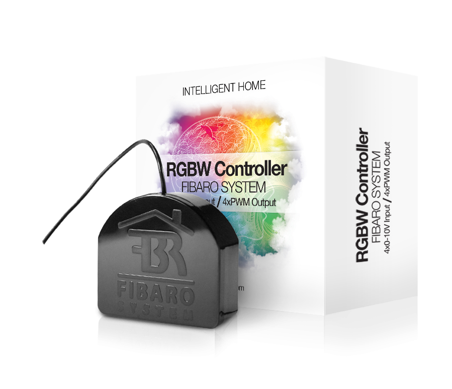
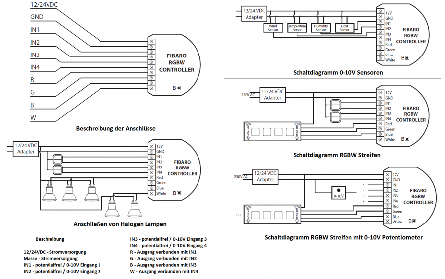

FIB_FGRGB-101
Firmware Version : 22.22 |
 |
KurzinfoA Dieses Gerät ist ein Z-Wave-Aktor. Dreimal schnell hintereinander die B-Taste oder einen der Taster der Anschlüsse I1-I4 drücken wird eine Inclusion oder Exclusion bestätigen. Direkt nach dem Anschließen der Stromversorgung ist die Autoinclusion Funktion aktiv. Weitergehende Informationen finden sich in den jeweiligen Abschnitten dieses Handbuches. |
Produktbeschreibung
Der Fibar RGBW Einsatz das Schalten von 4 farbigen LED-Bändern. Durch den weißen Lichtkanal neben den RGB-Kanälen können noch zusätzliche Farbtöne ausgewählt werden. Das Gerät wird in einer Wanddose direkt hinter dem dort bereits befindlichen konventionellen Schalter platziert. Der Schalter schaltet den Verbraucher nun nicht mehr direkt, sondern liefert ein Steuersignal zum Fibar-Gerät, das wiederum den Verbraucher steuert. Diese Steuerung erfolgt entweder über den lokalen Schalter oder über Funk. Dieses Produkt funktioniert mit jeder Schalterserie und jedem Regulierungsschalter für Farb-LED`s, wenn in der Einbaudose genügend Platz ist. In großen 65 mm tiefen Dosen sollte dies regelmäßig der Fall sein. In kleineren Dosen (z.B. 45 mm) hängt die Einsatzmöglichkeit von der benötigten Tiefe des konventionellen Schalters sowie vom Platzbedarf der gegebenenfalls in der Dose befindlichen Elektroverbinder ab. Das Gerät muss mit 12 V Gleichspannung versorgt werden.
Installationsanleitung

- Stellen Sie vor der Installation sicher, dass das Gerät von der Stromversorgung getrennt ist.
- Schließen Sie das Fibaro RGBW Modul gemäß der Abbildung an. Verbinden Sie zuerst die Ausgänge (R,G,B,W) RGB/RGBW/LED Dioden oder Halogen Leuchten und die Eingänge (I1-I4). Verbinden Sie danach die Anschlüsse der Stromversorgung.
- Das Gerät darf nur mit stabilisierten Netzteilen betrieben werden (12V / 24V DC).
- Schalten Sie die Stromversorgung an.
- Inkludieren Sie das Gerät in Ihr Z-Wave Netzwerk.
Beachte:
- Das Fibaro RGBW Modul darf nur mit Niedrigspannung von 12VDC oder 24VDC betrieben werden. Das Anschließen von höheren Spannungen führt zur Beschädigung des Gerätes.
- Das Fibaro RGBW Modul muss mit der gleichen Spannung wie die angeschlossenen Leuchten betrieben werden. Werden die angeschlossenen Leuchten mit 12V (24V) betrieben, muss das Modul ebenfalls mit 12V (24V) betrieben werden.
- Das Fibaro RGBW Modul hat 0-10V Eingänge, aber KEINE 0-10V Ausgänge.
- Die anschließbaren Sensoren arbeiten mit 0-10V und werden per Kabel mit den Eingängen I1 - I4 verbunden. Die maximale Kabel-Länge für 0-10V Geräte beträgt 10 m. Beachten Sie dabei die Hinweise der jeweiligen Hersteller.
- Beim Anschließen langer RGBW/RGB/LED Streifen kann es zu Spannungsverlust kommen, der zum Absenken der Helligkeit der Leuchten führt. Um diesen Effekt zu vermeiden, wird empfohlen mehrere kurze seriell geschaltete LED Streifen anstelle von einem langen parallel geschaltetem LED Streifen zu verwenden. Es wird empfohlen LED Streifen mit einer maximalen Länge von 10 m zu verwenden. Beachten Sie dabei die Hinweise der jeweiligen Hersteller.
Verhalten des Gerätes im Z-Wave Netz
I Im Auslieferungszustand ist das Gerät mit keinem Z-Wave-Netz verbunden. Damit es mit anderen Z-Wave Geräten kommunizieren kann, muss es in ein bestehendes Z-Wave Netz eingebunden werden. Dieser Prozess wird bei Z-Wave Inklusion genannt. Geräte können Netzwerke auch wieder verlassen. Dieser Prozess heißt bei Z-Wave Exklusion. Beide Prozesse werden von einem Controller gestartet, der dazu in einen Inklusion- bzw. Exklusion-Modus geschaltet werden muss. Das Handbuch des Controllers enthält Informationen, wie er in diese Modi zu schalten ist. Erst wenn der Controller des Z-Wave Netzes im Inclusion-Modus ist, können Geräte hinzugefügt werden. Das Verlassen des Netzes durch Exklusion führt zum Rücksetzen dieses Gerätes in den Auslieferungszustand.
Zum Inkludieren/Exkludieren des Gerätes drücken Sie dreimal schnell hintereinander die B-Taste oder einen der Taster der Anschlüsse I1-I4. Sie können ebenfalls die Auto-Inklusion Funktion verwenden, indem Sie Ihr Home Center oder anderen Controller in den Inklusionsmodus bringen, und das RGB Modul an die Stromversorgung anschließen, dabei wird das Fibaro RGB Modul automatisch unkludiert.
Bedienung des Gerätes
Das Fibaro RGBW Modul kann mittles Taster oder Kippschalter bedient werden. Das Gerät kann zusätzlich mit allen 0-10V Sensoren wie Temperatursensoren, Windgeschwindigkeits-/Wingrichtungssensoren, Luftmassenmesser oder Helligkeitssensoren als Einganggröße arbeiten.
Das Fibaro RGBW Modul bietet umfangreich konfigurierbare Betriebsmodie. Dieser wird bei der ersten Inbetriebnahme festgelegt (Parameter 14).
Fibaro RGBW Modul Betriebsmodus:
RGB/RGBW MODE - Steuerung von RGBW/RGB/LED Streifen oder Halogen Lecuhten durch Schalter an den Eingängen I1-I4. Der Anwender kann die Beluchtungsfarbe exakt festlegen.
Das Fibaro RGBW Modul hat 4 steuerbare Eingänge I1-I4, die standardmäßig mit Tastern arbeiten. Jeder eingang steuert einen festgelegten Kanel:
- I1 steuert R Kanal
- I2 steuert G Kanal
- I3 steuert B Kanal
- I4 steuert W Kanal
Dafür muss jeder der Eingänge I1-I4 mit dem Masseanschluss verbunden werden (siehe Abbildung). Zusätzluich kann mit Parameter 14 folgendes einsgstellt werden:
- NORMAL Modus - direkte Steuerung jedes Ausgangs. Mit dieser Einstellung werden die einzelnen Ausgänge unabhängig von einander gesteuert, z.B. um die Sättigung jeder Farbe einzeln einzustellen. Doppelklick setzt die Sättigung des gewählten Kanals auf 100%. Dieser Modus funktioniert mit Tastern und Kippschaltern.
- HELLIGKEIT Modus - alle Ausgänge werden zusammen gesteuert, z.B. ein Schalter steuert gleichzeitig die Helligkeit aller Kanäle. Dieser Modus funktioniert mit Tastern und Kippschaltern.
- REGENBOGEN Modus - alle Ausgänge werden zusammen gesteuert und zeigen einen Übergang aller Farben. Der Regenbogen Modus funktioniert nur mit Tastern.
IN/OUT Modus - alle Ein- und Ausgänge können frei konfiguriert werden. Alle Eingänge I1-I4 und alle Ausgänge R, G, B, W können unabhängig und frei vom Anwender konfiguriert werden. In Anhängigkeit von den Einstellungen wird das Gerät in Controller als Sensoren oder Dimmer angezeigt. Der Anwender legt dabei den Sensor Typ und den Betriebsbereich fest. Wenn ein Kanal z.B. im OUT Modus abreitet, kann der Anwender damit LED's oder Halogen Leuchten steuern.
Das Fibaro RGBW Modul besitzt 4 analoge steuerbare Eingänge, welche die Interpretation von 0-10V Analogsignalen erlauben. Diese Funktionalität wird beim Einsetzen von analogen Sensoren und Potentiometern benötigt. Der IN/OUT Modus erlaubt weiterhin das unabhängige Konfigurieren der Ein- und Ausgänge, z.B. kann Eingang I1 als 0-10V Sensor eingestellt sein, und Eingang I2-I4 könne zur Steuerung von LED Streifen oder Halogen Leuchten verwendet werden.
Eine weiter Möglichkeit wäre Eingang I1 als 0-10V Potentiometer einzustllen, und mit dem Ausgang R Halogen Lechten anzuschließen. Gleichzeitig könnten die anderen Eingänge mit 0-10V Sensoren verwendet werden.
Leistungs- und Stromverbrauch:
Das Fibaro RGBW Modul kann zusätzlich die aktuelle Leistungsaufnahme und den Stromverbrauch messen. Die Daten werden an den Controller gesendet.
Leistung - aktuelle Leistungsaufnahme von elektrischen Geräten in Watts (W).
Stromverbrauch - Stromverbrauch von elektrischen Geräten in einer bestimmten Periode in Kilowatt-Stunde (kWh). Eine Kilowatt-Stunde entspricht der Leistungsaufnahme von 1000 Watt über eine Zeit von einer Stunde. (1kWh = 1000 Wh).
Assoziationen - wie werden andere Geräte gesteuert?
A Z-Wave Geräte können andere Geräte direkt steuern. Diese direkte Steuerung heißt in Z-Wave Assoziation. In den steuernden Geräten muss dazu die Geräte-ID des zu steuernden Gerätes hinterlegt werden. Dies erfolgt in sogenannten Assoziationsgruppen. Eine Assoziationsgruppe ist immer an ein Ereignis im steuernden Gerät gebunden (Tastendruck oder Auslösen eines Sensors). Bei Eintritt dieses Ereignisses wird an alle in einer Assoziationsgruppe hinterlegten Geräte ein Steuerkommando gesendet.
Assoziationsgruppen:
| 1 | verbunden mit IN1 Eingang - sendet Control Frame zu assoziiertem Gerät jedesmal wenn Gerätestatus sich ändert (An/Aus). (max. Anzahl Geräte: 5) |
| 2 | verbunden mit IN2 Eingang - sendet Control Frame zu assoziiertem Gerät jedesmal wenn Gerätestatus sich ändert (An/Aus). (max. Anzahl Geräte: 5) |
| 3 | verbunden mit IN3 Eingang - sendet Control Frame zu assoziiertem Gerät jedesmal wenn Gerätestatus sich ändert (An/Aus). (max. Anzahl Geräte: 5) |
| 4 | verbunden mit IN4 Eingang - sendet Control Frame zu assoziiertem Gerät jedesmal wenn Gerätestatus sich ändert (An/Aus). (max. Anzahl Geräte: 5) |
| 5 | sendet Gerätestatus. Nur ein Gerät sollte in diese Gruppe. Standardmäßig der Primärcontroller. (max. Anzahl Geräte: 1) |
Setzen und Löschen von Assoziationsbeziehungen
SA Assoziationen können entweder per Funkkommando oder direkt am Gerät gesetzt werden.
Zum Assoziieren bringen Sie Ihren Controller Assoziationsmode und drücken Sie dreimal schnell hintereinander die B-Taste oder einen der Taster der Anschlüsse I1-I4.
Konfigurationseinstellungen
Z-Wave Produkte können direkt nach der Inklusion im Netz verwendet werden. Durch Konfigurationseinstellungen kann das Verhalten des Gerätes jedoch noch besser an die Anforderungen der Anwendung angepasst und zusätzliche Funktionen aktiviert werden.
WICHTIG: Manche Steuerungen erlauben nur die Konfiguration von vorzeichenbehafteten Werten zwischen -128 und 127. Um erforderliche Werte zwischen 128 und 255 zu programmieren, muss der gewünschte Wert minus 256 eingegeben werden. Beispiel: um einen Parameter auf einen Wert von 200 zu setzen, müsste der Wert 200-256 = -56 eingegeben werden, wenn nur positive Werte bis 128 akzeptiert werden. Bei Werten von 2 Byte Länge wird die gleiche Logik angewandt: Werte über 32768 werden als negative Werte angegeben
| Wert | Beschreibung |
|---|---|
| 0 | Alles An inaktiv, Alles Aus inaktiv |
| 1 | Alles An inaktiv, Alles Aus aktiv |
| 2 | Alles An aktiv, Alles Aus inaktiv |
| 255 | Alles An aktiv, Alles Aus aktiv (Voreingestellt) |
| Wert | Beschreibung |
|---|---|
| 0 | Normal (Dimmer) - BASIC_SET/SWITCH_MULTILEVEL_START/STOP (Voreingestellt) |
| 1 | Normal (RGBW) - COLOR_CONTROL_SET/START/STOP_STATE_CHANGE |
| 2 | Normal (RGBW) - COLOR_CONTROL_SET |
| 3 | Helligkeit - BASIC_SET/SWITCH_MULTILEVEL_START/STOP |
| 4 | Regenbogen (RGBW) - COLOR_CONTROL_SET |
| Wert | Beschreibung |
|---|---|
| 0 | MODE1 (verbundene Parameter: 9-Schritt Wert, 10-Zeit zwischen Schritten) (Voreingestellt) |
| 1 | MODE2 (verbundene Parameter: 11-Zeit zur Änderung des Wertes, wichtig für RGB/RGBW) |
| Wert | Beschreibung |
|---|---|
| 1 — 255 | Schritt-Wert (Voreingestellt 1) |
| Wert | Beschreibung |
|---|---|
| 1 — 60000 | 1 ms (Voreingestellt 10) |
| Wert | Beschreibung |
|---|---|
| 0 | sofortiger Wechsel |
| 1 — 63 | 20-126 [ms] Wert*20ms |
| 65 — 127 | 1-63 [s] (Wert-64)*1s (Voreingestellt 67) |
| 129 — 191 | 10-630 [s] (Wert-128)*10s |
| 193 — 255 | 1-63 [min] (Wert-192)*1min |
| Wert | Beschreibung |
|---|---|
| 3 — 255 | (Voreingestellt 255) |
| Wert | Beschreibung |
|---|---|
| 1 — 255 | (Voreingestellt 2) |
| Wert | Beschreibung |
|---|---|
| 0 — 65535 | (Voreingestellt 4369) |
| Wert | Beschreibung |
|---|---|
| 0 | Nein, deaktiviert |
| 1 | Ja, aktiviert (Voreingestellt) |
| Wert | Beschreibung |
|---|---|
| 0 | inaktiv - Gerät antwortet nicht auf Alarmzustand (Voreingestellt) |
| 1 | Alarm An - Gerät schaltet an, wenn Alarm kommt (alle Kanäle auf 99%) |
| 2 | Alarm Aus - Gerät schaltet aus, wenn Alarm kommt (alle Kanäle auf 0%) |
| 3 | Alarm Programm - Alarmzustand schaltet Alarm Sequenz (Programm festgelegt in Parameter 38) |
| Wert | Beschreibung |
|---|---|
| 1 — 10 | (Voreingestellt 10) |
| Wert | Beschreibung |
|---|---|
| 1 — 65534 | Sekunden (Voreingestellt 600) |
| Wert | Beschreibung |
|---|---|
| 0 | Report als Folge von Aktionen des Eingangs und Controllers (SWITCH MULTILEVEL) (Voreingestellt) |
| 1 | Report als Folge von Aktionen des Eingangs (SWITCH MULTILEVEL) |
| 2 | Report als Folge von Aktionen des Eingangs (COLOR CONTROL) |
| Wert | Beschreibung |
|---|---|
| 1 — 100 | 0.1V (Voreingestellt 5) |
| Wert | Beschreibung |
|---|---|
| 0 | Reports werden nicht gesendet. Reports werden nur beim Polling oder Ausschalten des Gerätes gesendet. |
| 1 — 65534 | Sekunde (Voreingestellt 30) |
| Wert | Beschreibung |
|---|---|
| 0 | Änderungen des Energieverbrauches werden nicht gemeldet. Reports werden nur beim Polling gemeldet. |
| 1 — 254 | 0.01kWh (Voreingestellt 10) |
| Wert | Beschreibung |
|---|---|
| 0 | Beleuchtungfarbe wird auf Weiß gesetzt (Alle Kanäle werden zusammen gesteuert) |
| 1 | letzter eingestellter Farbwert wird gespeichert (Voreingestellt) |
| Wert | Beschreibung |
|---|---|
| 1 — 10 | Nummer des Animations-Programms (Voreingestellt 1) |
| Wert | Beschreibung |
|---|---|
| 0 | Node Information Frame wird gesendet (Voreingestellt) |
| 1 | started eingestelltes Programm |
Technische Daten
| Stromversorgung | 12 V |
| Explorer Frames | Ja |
| SDK | 4.55 |
| Geräteart | Slave with routing capabilities |
| Allgemeiner Z-Wave-Gerätetyp | Multilevel Switch |
| Spezieller Z-Wave-Gerätetyp | Multilevel Power Switch |
| Router | Ja |
| FLiRS | Nein |
| Firmware Version | 22.22 |